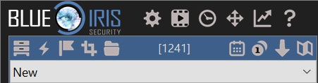
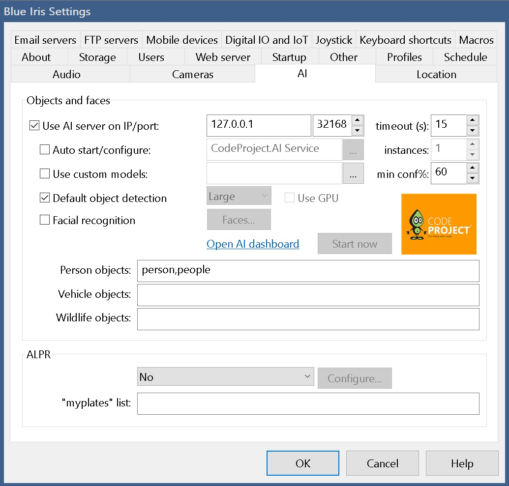
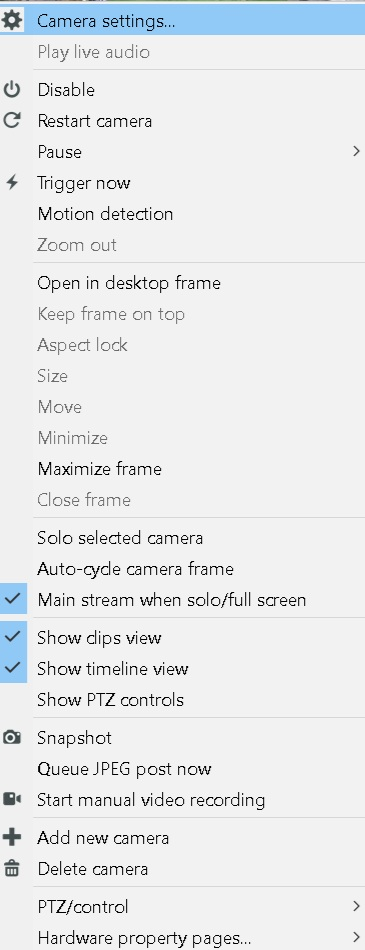
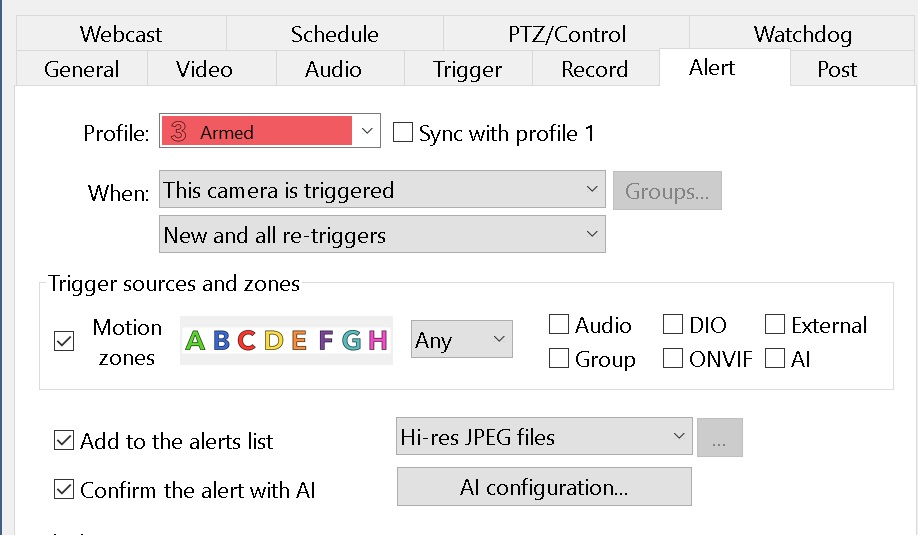
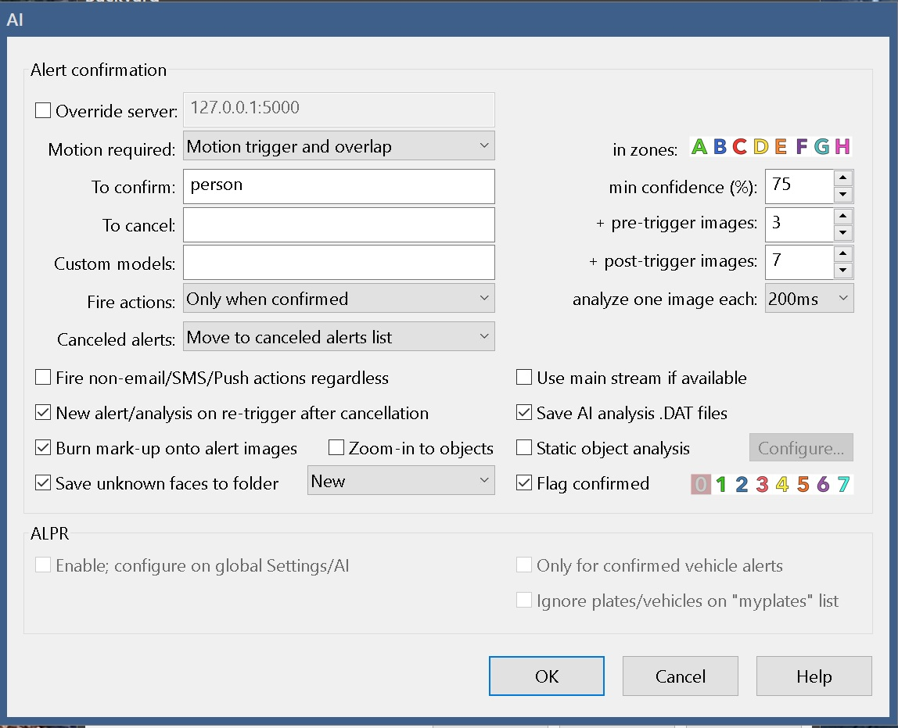

Blue Onyx Object Detection Service
Blue Onyx is a simple and reliable object detection server designed for local use. Built in Rust on top of the ONNX runtime, it offers a dependable inference engine.
This led to the question: can this be done in a simpler, more robust way than other solutions?
To avoid the feature creep that plagues other solutions, Blue Onyx is designed to address specific problems (object detection). Its main goals are stability, ease of upgrade, and decent performance across a wide range of consumer hardware.
With this philosophy, Blue Onyx is designed with certain limitations. It is unlikely to support:
- Specialized NPU/TPU hardware
- Dynamic switching of multiple models at runtime (instead, run multiple Blue Onyx instances)
These constraints help maintain the service's simplicity and robustness.
For example, if you are using an x86 Windows or standard Linux distribution with a consumer CPU/GPU combo and need a stable object detection service that works with new state-of-the-art models, Blue Onyx might be right for you.
Once, during an all-hands meeting at a company I worked for that had just been acquired by a big tech firm, a Linux engineer asked the CEO of the big tech firm if we would continue to support all the various hardware we currently supported. The CEO responded, "we cannot support all different toasters out there."
TODO
TODO
Binaries
TODO
TODO
TODO
TODO
Statistics Page
Statistics are crucial for understanding your server's performance and identifying whether it is operating efficiently or experiencing overload. The statistics on this page can help you assess these aspects.
You can access the statistics page by default at: http://127.0.0.1:32168/stats
Stats

Uptime
The total time elapsed since Blue Onyx was started.
Model Name
The name of the model, which includes variations such as small (s), medium-small (ms), medium (m), large (l), and extra-large (x). Generally, larger models require more robust hardware and result in slower runtimes but provide higher object detection accuracy. It’s a balance between performance and resource requirements.
Device Name
The name of the device performing the inference.
Execution Provider
This acts as the bridge between the device and the ONNX model processing code. While GPUs typically offer faster performance, CPUs may outperform GPUs in certain scenarios. It's essential to benchmark and test on your specific hardware to determine the optimal choice.
Successful Requests
The total number of detection requests made from Blue Iris and the Test page.
Dropped Requests
The total number of detection requests made from Blue Iris and the Test page that got dropped. Having a few of these is not really a problem, it just means that at some point your service was overloaded. But if this keeps growing then it's an indication that the service cannot handle the amount of request sent to it. So either pace the sending (images from blue iris) or upgrade your hardware.
Timing Statistics
Lower values are better, as the goal is to process as many images as quickly as possible. Consider it in terms of frames per second (FPS). For example, if you have a video camera operating at 15 FPS, each frame must be processed in under approximately 67 ms to maintain real-time processing.
This processing is handled by a separate service that manages encoded JPEG images of various sizes. Therefore, processing speed depends on both image size and inference speed. Larger images take more time to decode and resize. For example:
- 4K Image: Decoding takes around 100 ms, and resizing to 640x640 takes an additional 10 ms.
- 640x480 Image: Decoding takes approximately 3-4 ms, and resizing takes about 1 ms.
It's crucial to monitor the total processing time of input images, not just the inference time. For instance, even if a Coral TPU processes an image in 5 ms, the overall time may still be 110 ms when accounting for decoding and preprocessing.
Key Points:
-
Average Analysis Round Time: The time from when the service receives a request to when it sends a response. If this time closely matches the processing time, it indicates that your server is not overloaded. The inference engine processes one image at a time, managed by a queue.
Examples:
- 1 request every 100 ms with a processing time of 100 ms: The average round-trip time will be approximately 100 ms.
- 2 requests every 100 ms: One request will be queued, waiting for the first to complete, resulting in a maximum round-trip time of 200 ms.
Formula:
Average Analysis Round Time = Queue Time + Processing Time -
Processing Time: Includes all image processing and inference activities, such as decoding, resizing, and inference.
-
Inference Time: The duration from when an image has been decoded and resized to 640x640 until the inference engine returns the boundary boxes. This specifically measures the time spent within the inference engine.
Recommendations:
- Optimize Image Resolution: If your processing time significantly exceeds inference time, consider using lower-resolution streams to reduce decoding and resizing overhead.
- Manage Request Rate: If your round-trip time is much higher than processing time, try to spread out requests to avoid overloading the server. While the server can handle the load by queuing images in memory, the inference engine might process images more efficiently in bulk once warmed up. Use the test client to stress-test and fine-tune this balance.
- Adjust CPU Threads: For CPU-based inference, you can control the number of threads used. Even if the queue and services run on a single thread, the actual CPU inference can utilize multiple threads for better performance.
Performance Goal: An average round-trip request time between 50 - 200 ms is generally acceptable. However, this can vary based on your specific setup and requirements.
Configure Blue Iris
Blue Onyx runs as a service, it has a simple job. It receives a image in jpg format from Blue Iris. It will run it through detection pipeline and it will report if it found any of the objects that the currently used model have if any in the picture. Once Blue Iris get's the response it will act based on this information.
NOTE: BLUE ONYX DOES NOT SUPPORT RUNNING MULTIPLE MODELS IN ONE SERVER, IT'S ONE SERVER ONE MODEL. SETUP MULTIPLE SERVERS AND DUPLICATE STREAMS IF YOU WANT TO RUN SEPARATE MODELS FOR 1 CAMERA.
Setup
See this for general Blue Iris setup: https://youtu.be/jqc1ukrkMmI?si=9cDS3uYp2tQUGbIt&t=1
AI Setup
Please refer to the documentation for more details. For specific Blue Iris questions please reach out to Blue Iris support.
Press the cogwheel in Blue Iris for settings.

Press the AI tab. Replace ip and port as needed.

Then go in to each individual camera setting by right click on the camera and then click Camera Settings.

Then press alert tab and then AI configuration

Here you can override the AI server if you are running multiple instances of Blue Onyx. Avoid using main stream as the service will anyway resize the pictures to smaller resolution and it only cost cpu time to decode large jpg images.

Then go back, right click on the camera again and then press trigger now.
If everything is configured correctly you should see succesful request count increase in the stats page.
TODO
Architecture
The design of Blue Onyx is very simple. It implements the same HTTP API as other open-source object detection services for compatibility.
/v1/vision/detection
The server is mainly implemented in Rust but utilizes ONNX for inference which is written in C++. So all code is compiled and native.
The HTTP server is implemented in axum which utilizes tokio and runs async in one thread to handle requests. It can handle multiple requests at the same time. Each request is then put on a channel/queue to the worker thread. The worker thread handles the decoding of the image, resizing, and finally running the inference. Once this is done, the results are gathered, and a response is sent back to the task in the main thread that was handling the request.
To ensure optimal performance, it's crucial to use a model that can handle the system's load efficiently. For instance, processing an image every 1-2 seconds might suffice for a single camera. However, with 20 cameras generating high traffic, the processing speed may need to be as fast as 50 milliseconds per image.
When setting up Blue Onyx, the queue size is adjusted based on your timeout (the size of the glass) and the processing speed (how fast we can suck out the water). If the system reaches its capacity, Blue Onyx will return errors and log warnings indicating it is over capacity. While the system will recover, it's essential to ensure sufficient resources and fast hardware to manage the system's load effectively.
Each Blue Onyx instance runs one model. If a user wants to run multiple models on one machine, one can launch multiple Blue Onyx instances running on different ports. The only consideration would be if one run on CPU to assign a subset of cores to each server. For GPU the scheduling is handled by the GPU and multiple processes and threads can share GPU if needed.
- Blue Onyx Server 1 with model 1 on port 32168
- Blue Onyx Server 2 with model 2 on port 32167
This design allows users to host multiple models and lets the system handle scheduling and resources.